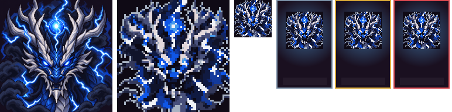
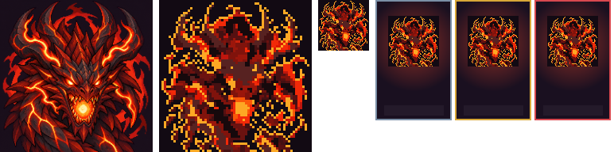
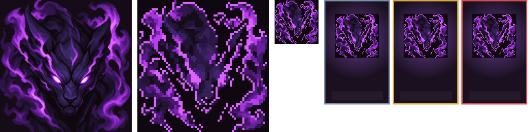
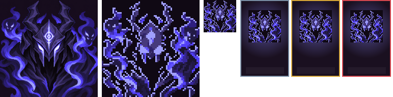
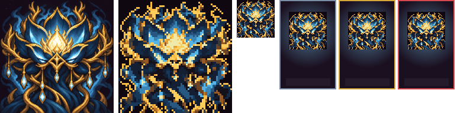
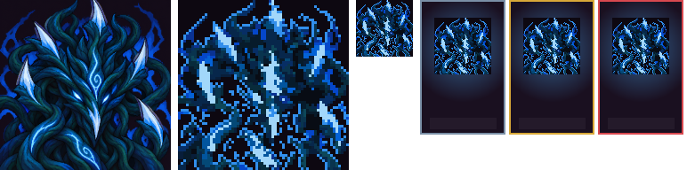
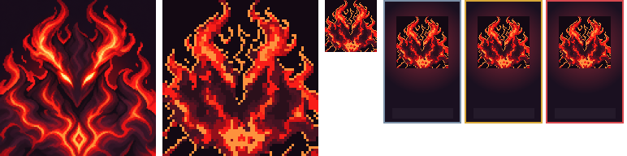
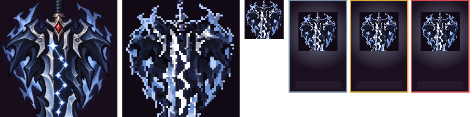

8 võ hồn, mỗi võ hồn 1/3 lượt bằng builtin image_gen.imagegen; concept cùng mã làm ảnh neo. Pixel hoá preset portrait2 / P1c2 đã duyệt 27/10. Tất cả là ứng viên chờ duyệt mỹ thuật, chưa nhập game.
Mỗi hàng: RAW thu nhỏ → P1c2 phóng gần nhất → 64×64 thật → thử khung thẻ. Khung thẻ chỉ do công cụ preview hiển thị. Lỗi còn lại khai --eye; không sửa RAW hoặc viết tay prompt.

góc nhìn chính diện thay vì 3/4; sừng chạm mép trên; sét và lôi châu sáng rộng tranh mắt; cần duyệt độ tách nền ở 64×64
P1c2 — mắt nhỏ lẫn vào vảy/sét sáng; lôi châu nổi hơn mắt.

góc chính diện thay vì 3/4; lõi miệng và vết lửa trên sừng/thân sáng rộng; cổ chạm mép dưới; cần duyệt độ tách nền và mắt ở 64×64
P1c2 — mắt nhỏ yếu hơn lõi miệng, mảng lửa bị vỡ thành nhiều đốm.

góc chính diện thay vì 3/4; khí tím rộng cùng gam thân; thân tối có nguy cơ dính nền, mắt trắng tím rõ; chi tiết nhỏ cần duyệt ở 64×64
P1c2 — mắt trắng của RAW giảm mạnh thành tím tối, khó đọc ở 64×64; chưa đạt điểm sáng.

góc chính diện thay vì 3/4; sừng sát mép trên, khói và ấn trán sáng tranh khe mắt; nền/thân cùng gam lạnh; cần duyệt ở 64×64
P1c2 — hai khe mắt giảm sáng rõ so với RAW, gần lẫn vào mặt nạ ở 64×64.

hoa nhìn chính diện thay vì 3/4; nhụy rõ nhưng dây vàng/giọt sáng nhiều và cạnh cành chạm mép; bố cục đối xứng, thân cùng gam nền; cần duyệt ở 64×64
P1c2 — nhụy vàng còn rõ, dây và viền hoa thành nhiều đốm nhỏ.

nhận diện — dây leo bị nhân hoá thành mặt có hai mắt, ngoài concept thực vật; bố cục chính diện, đầu ngọn bị cắt mép trên; dây mảnh và màu lạnh dính nền; candidate chưa đạt
P1c2 — mảng dây leo tối giảm rõ và còn hình giống mặt; chưa đạt nhận diện thực vật.

góc chính diện thay vì 3/4; lửa sừng bị cắt mép trên, lửa vai và ấn ngực sáng rộng tranh mắt; nhiều đỏ trên thân đỏ thẫm; cần duyệt ở 64×64
P1c2 — mắt nhỏ và ấn ngực vỡ thành đốm, lửa sừng sáng rộng hơn mắt.

nhận diện — có tám điểm sao thay vì bảy; góc chính diện thay vì 3/4; cận chuôi/sống kiếm cắt mất mũi, mép thép sáng rộng và quầng lam tranh sao; candidate chưa đạt
P1c2 — sao dọc sống kiếm dính vào mép thép trắng, ngọc đỏ nhỏ khó đọc.